10 探索性数据分析
10.1 引言
本章将向你展示如何系统地使用可视化和转换来探索数据，这项任务被统计学家称为探索性数据分析（Exploratory Data Analysis，简称EDA）。E DA是一个迭代循环的过程。你 需要：
- 对你的数据产生疑问。
- 通过数据可视化、转换和建模来寻找答案。
- 利用所学的知识来完善你的问题或者产生新的问题。
EDA并不是一个有着严格规则的正式流程，其更多的是一种思维方式。在 EDA的初始阶段，你应该自由地调查任何出现在你脑海中的想法。这 些想法中的一些会成功，而一些则会是死胡同。随 着你的探索继续，你将专注于一些特别有效的见解，并最终将其记录下来并与他人交流。
EDA是任何数据分析的重要组成部分，即使主要的研究问题已经被直接提出，因为你总是需要调查你的数据质量。数 据清洗只是EDA的一个应用：你问的问题是数据是否符合你的期望。为 了进行数据清洗，你需要运用EDA的所有工具：可视化、转换和建模。
10.1.1 必要条件
在本章中，我们将结合你学到的关于dplyr和ggplot2的知识，以交互的方式提出问题，用数据来回答问题，然后提出新的问题。
10.2 问题
“没有常规的统计问题，只有可疑的统计常规。” — Sir David Cox
“一个对正确问题的近似答案（这个问题常常是模糊的）远胜于一个对错误问题的精确答案（这个问题总是可以精确化的）。” — John Tukey
在EDA期间，你的目标是了解你的数据。要 做到这一点，最简单的方法是将问题作为工具来指导你的调查。当 你提出一个问题时，这个问题会将你的注意力集中在数据集的特定部分上，并帮助你决定制作哪些图形、模型或转换。
EDA本质上是一个创造性的过程。和 大多数创造性过程一样，提出高质量问题的关键是生成大量问题。在 你的分析开始时，很难提出有启示性的问题，因为你不知道可以从数据集中获取哪些见解。另 一方面，你提出的每一个新问题都会让你了解数据的一个新方面，并增加你发现新事物的机会。如 果你根据所发现的内容，针对每个问题都提出一个新问题，你就能迅速深入数据中最有趣的部分，并开发出一系列引人深思的问题。
没有规定你应该提出哪些问题来指导你的研究。然 而，两种类型的问题始终有助于在你的数据中发现新事物。你 可以大致地将这些问题表述为：
我的变量中存在什么类型的变异？
我的变量之间存在什么类型的协变？
本章的其余部分将探讨这两个问题。我 们将解释什么是变异和协变，并向你展示几种回答问题的方法。
10.3 变异
变异（variation）是指变量的值从一次测量到另一次测量时发生变化的趋势。在 现实生活中，你很容易看到变异；如果你对任何连续变量进行两次测量，你会得到两个不同的结果。即 使你测量的是像光速这样的常量，也是如此。你 的每次测量都会包含一定量的误差，这些误差会随着测量的不同而有所变化。变 量也可能因为测量对象的不同（例如，不同人的眼睛颜色）或时间的不同（例如，电子在不同时刻的能量水平）而发生变化。每 个变量都有自己特有的变异模式，这些模式可以揭示出关于该变量在同一观测值的不同测量之间以及不同观测值之间的有趣信息。理 解这种模式的最好方法是可视化变量的值分布，这是你在 章节 1 中已经学过的内容。
我们将通过可视化diamonds数据集中约54,000颗钻石的重量（carat）分布来开始我们的探索。由 于carat是一个数值变量，我们可以使用直方图来表示。
ggplot(diamonds, aes(x = carat)) +
geom_histogram(binwidth = 0.5)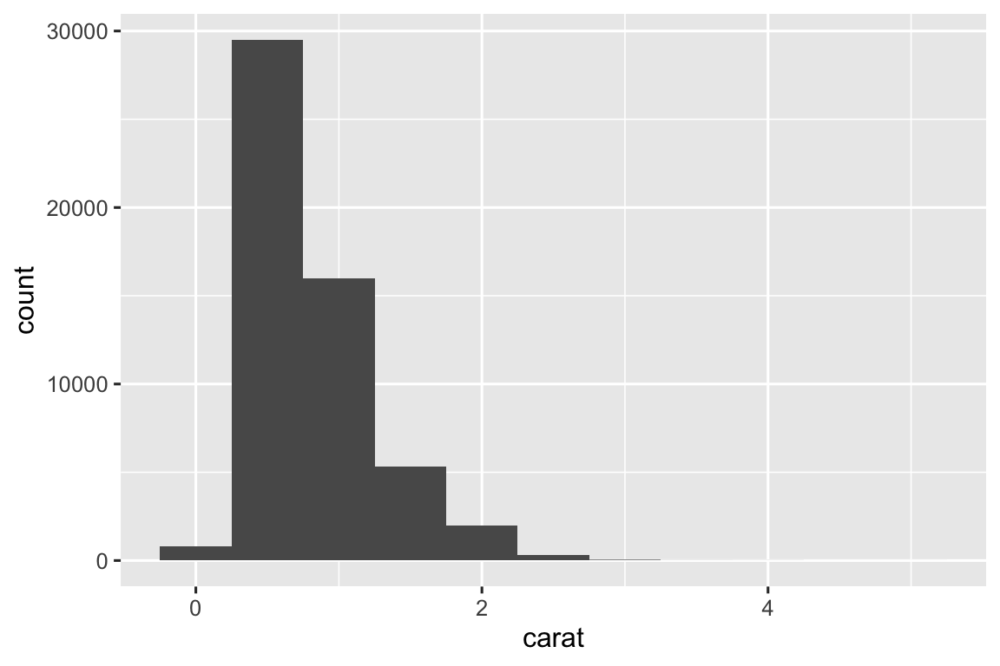
既然你现在可以可视化变异了，你应该在你的图中寻找什么？你 应该提出什么类型的后续问题？我 们已经在下方列出了你在图形中最有用的信息类型，并为每种类型的信息提供了一些后续问题。提 出好的后续问题的关键在于依靠你的好奇心（你想更多了解什么？）和怀疑精神（这可能会误导人吗？）。
10.3.1 典型值
在条形图和直方图中，高的条形代表变量的常见值，较短的条形代表不太常见的值。没 有条形的地方表示在您的数据中未看到的值。为 了将这些信息转化为有用的问题，请寻找任何出乎意料的东西：
- 哪些值是最常见的？为什么？
- 哪些值是罕见的？为什么？这符合你的预期吗？
- 你是否看到任何不寻常的模式？可能是什么原因导致的？
让我们看一下较小钻石的carat分布。
smaller <- diamonds |>
filter(carat < 3)
ggplot(smaller, aes(x = carat)) +
geom_histogram(binwidth = 0.01)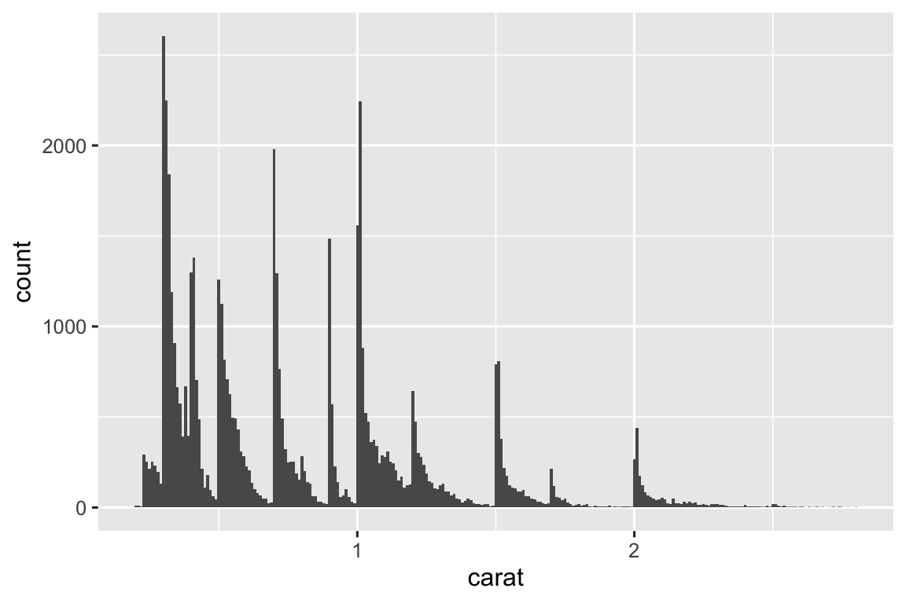
这个直方图提出了几个有趣的问题：
为什么整克拉和常见的小数克拉的钻石更多？
为什么每个峰值右侧的钻石比左侧的稍微多一些？
可视化图表还可以揭示集群，这表明你的数据中存在子组。为 了理解这些子组，请问：
每个子组内的观测值如何相互相似？
不同集群中的观测值如何相互不同？
你如何解释或描述这些集群？
为什么集群的出现可能会产生误导？
其中一些问题可以用数据来回答，而一些问题则需要关于数据的领域专业知识。许 多问题将促使你探索变量之间的关系，例如，查看一个变量的值是否可以解释另一个变量的行为。我 们稍后会讲到这一点。
10.3.2 异常值
异常值是不寻常的观测值；它们是似乎不符合模式的数据点。有 时异常值是数据输入错误，有时它们只是在这组数据收集中偶然观察到的极端值，而其他时候它们可能暗示着重要的新发现。当 你拥有大量数据时，有时在直方图中很难看到异常值。例 如，查看钻石数据集中y变量的分布。异 常值存在的唯一证据是x轴上异常宽的界限。
ggplot(diamonds, aes(x = y)) +
geom_histogram(binwidth = 0.5)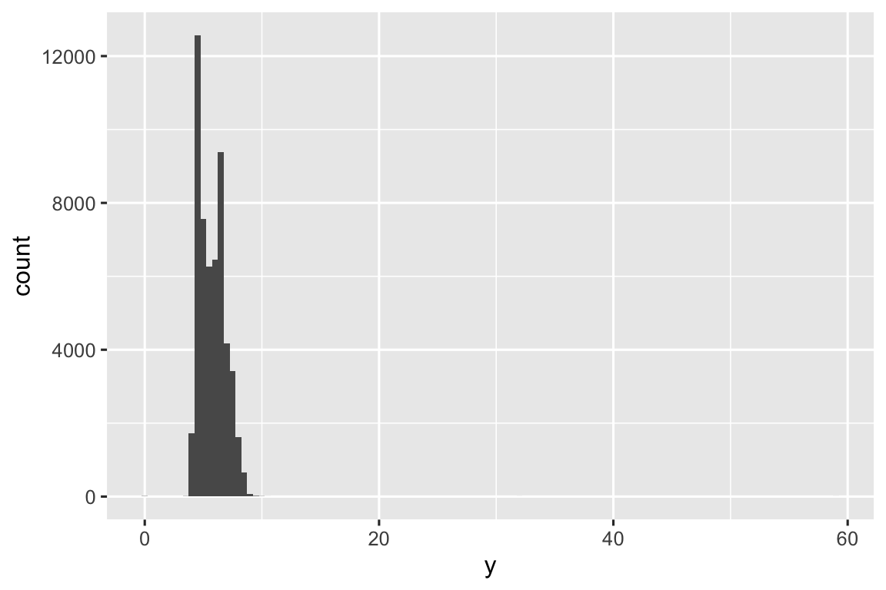
在常见的数值范围（箱子）中有许多观测值，这使得罕见的数值范围（箱子）非常短，因此很难看到它们（尽管也许如果你紧盯着 y 轴的 0 点仔细看，会发现点什么）。为 了更容易地看到异常值，我们需要使用coord_cartesian()函数将 y 轴缩放到较小的值域范围。
ggplot(diamonds, aes(x = y)) +
geom_histogram(binwidth = 0.5) +
coord_cartesian(ylim = c(0, 50))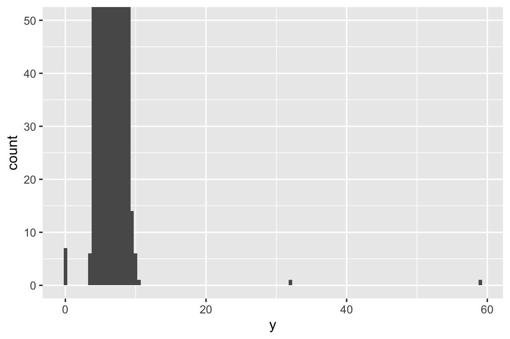
coord_cartesian()还有一个xlim()参数，当你需要放大 x 轴时可以使用它。g gplot2同样有xlim()和ylim()函数，但它们的工作方式略有不同：它们会丢弃超出限制范围的数据。
这使得我们能够看到有三个异常值：0，~30和~60。我 们使用dplyr将它们筛选出来。
unusual <- diamonds |>
filter(y < 3 | y > 20) |>
select(price, x, y, z) |>
arrange(y)
unusual
#> # A tibble: 9 × 4
#> price x y z
#> <int> <dbl> <dbl> <dbl>
#> 1 5139 0 0 0
#> 2 6381 0 0 0
#> 3 12800 0 0 0
#> 4 15686 0 0 0
#> 5 18034 0 0 0
#> 6 2130 0 0 0
#> 7 2130 0 0 0
#> 8 2075 5.15 31.8 5.12
#> 9 12210 8.09 58.9 8.06y 变量测量的是这些钻石的三个维度之一，单位为毫米。我 们知道钻石的宽度不可能为 0 毫米，所以这些值一定是错误的。通 过进行探索性数据分析（EDA），我们发现了被编码为 0 的缺失数据，而我们仅仅通过搜索 NAs 是无法发现这些数据的。接 下来，我们可能会选择将这些值重新编码为 NAs，以防止误导性的计算。我 们也可能怀疑 32 毫米和 59 毫米的测量值是不合理的：这些钻石的长度超过了一英寸，但价格并没有达到数万美元！
一个好的做法是在包含和不包含异常值的情况下重复你的分析。如 果它们对结果的影响很小，而且你无法确定它们出现的原因，那么忽略它们并继续分析是合理的。然 而，如果它们对你的结果有重大影响，你不应该没有理由就删除它们。你 需要找出导致它们出现的原因（例如数据输入错误），并在你的报告中披露你已经删除了这些值。
10.3.3 练习
探索
diamonds数据集中变量x、y和z的分布。你 发现了什么？想 象一下钻石，并思考你如何决定哪个维度是长度、宽度和深度。探索
price的分布。你 是否发现了任何不寻常或令人惊讶的事情？（ 提示：仔细考虑binwidth，并确保你尝试了一系列不同的值。）0.99 克拉的钻石有多少颗？1 克拉的钻石有多少颗？你 认为这种差异的原因是什么？
在直方图上放大时，比较
coord_cartesian()和xlim()或ylim()的区别。如 果你没有设置binwidth会发生什么？如 果你尝试缩放到只显示半根柱子时会发生什么？
10.4 异常值
如果你在数据集中遇到了异常值，并且只是想继续剩余分析，那么你有两个选择。
-
删除包含异常值的整行：
我们不推荐这个选项，因为一个无效的值并不意味着该观测值的其他所有值也都是无效的。此 外，如果你的数据质量较低，当你将这种方法应用于每个变量时，你可能会发现你没有留下任何数据！
-
相反，我们建议将异常值替换为缺失值。最 简单的方法是使用
mutate()来替换变量的一个修改后的副本。你 可以使用if_else()函数将异常值替换为NA：
在图中绘制缺失值并不合理，因此ggplot2不会将它们包含在图中，但会发出警告，说明这些值已被移除：
ggplot(diamonds2, aes(x = x, y = y)) +
geom_point()
#> Warning: Removed 9 rows containing missing values or values outside the scale range
#> (`geom_point()`).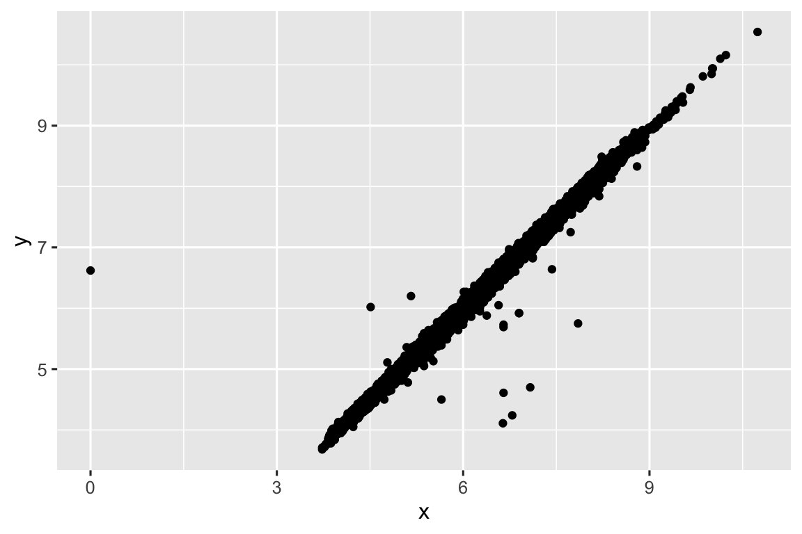
要阻止该警告，请设置 na.rm = TRUE:
ggplot(diamonds2, aes(x = x, y = y)) +
geom_point(na.rm = TRUE)有时你想了解包含缺失值的观测与包含记录值的观测之间有何不同。例 如，在nycflights13::flights1数据集中，dep_time变量中的缺失值表示航班被取消。 因此，你可能想要比较取消航班和未取消航班的计划起飞时间。 可以通过创建一个新变量来实现这一点，使用is.na()函数来检查dep_time是否缺失。
nycflights13::flights |>
mutate(
cancelled = is.na(dep_time),
sched_hour = sched_dep_time %/% 100,
sched_min = sched_dep_time %% 100,
sched_dep_time = sched_hour + (sched_min / 60)
) |>
ggplot(aes(x = sched_dep_time)) +
geom_freqpoly(aes(color = cancelled), binwidth = 1/4)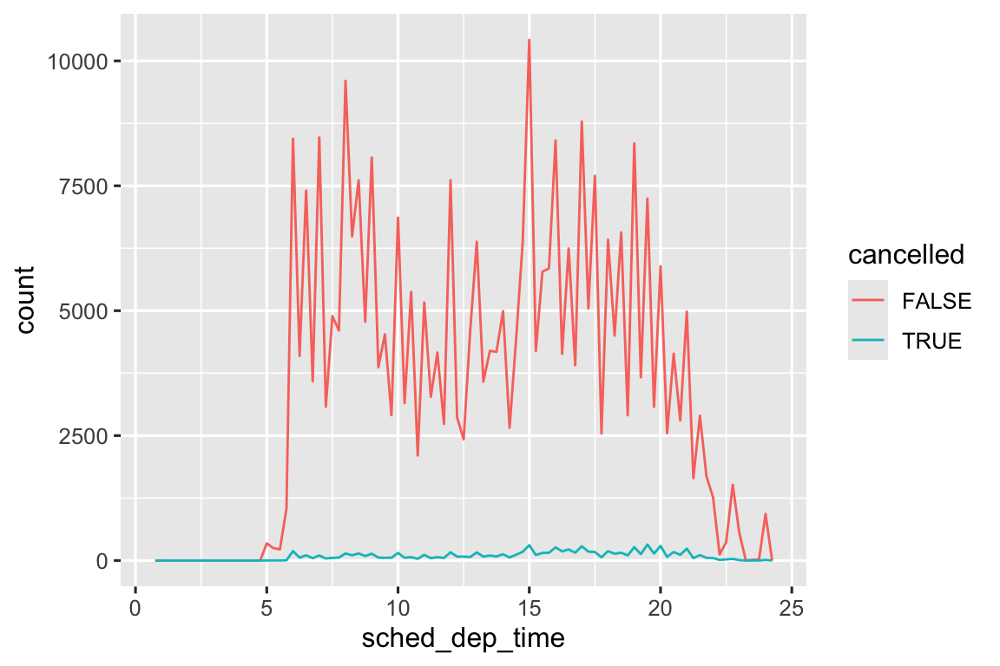
然而这个图并不太好，因为未取消的航班比已取消的航班多得多。在 下一节中，我们将探索一些技术来改进这种比较。
10.4.1 练习
10.5 协变（covariation）
如果变异描述了一个变量内部的行为，那么协变描述了变量之间的行为。协 变是两个或多个变量的值以相关的方式一起变化的趋势。发 现协变的最佳方法是可视化两个或多个变量之间的关系。
10.5.1 一个分类变量和一个数值变量
例如，使用geom_freqpoly()来探索钻石的价格如何随其质量(cut)的变化而变化:
ggplot(diamonds, aes(x = price)) +
geom_freqpoly(aes(color = cut), binwidth = 500, linewidth = 0.75)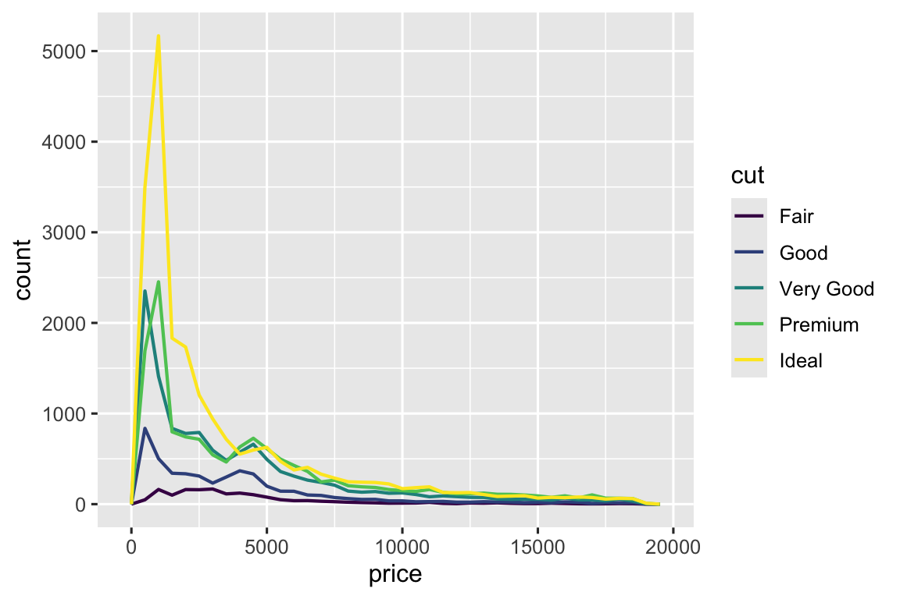
请注意，ggplot2为cut使用了有序的颜色刻度，因为它在数据中定义为有序因子变量。你 将在 小节 16.6 中学到更多关于它的知识。
geom_freqpoly()的默认外观在这里并不那么有用，因为由总计数确定的高度在各个cut之间差异很大，使得难以看出它们分布形状的差异。
为了使比较更容易，我们需要交换 y 轴上的显示内容。我 们不显示计数，而是显示密度（density），密度是标准化的计数，使得每个频率多边形的面积都为1。
ggplot(diamonds, aes(x = price, y = after_stat(density))) +
geom_freqpoly(aes(color = cut), binwidth = 500, linewidth = 0.75)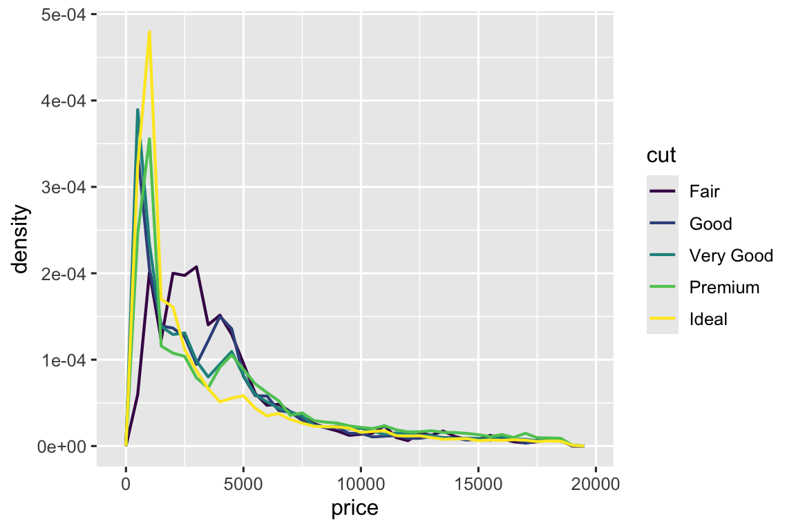
请注意，我们正在将density 映射到y轴上，但由于density 不是diamonds数据集中的变量，首先需要计算它。我 们使用after_stat()函数来完成这一操作。
这个图有一个相当令人惊讶的地方——看起来质量一般的钻石（即最低质量）的平均价格最高！但 也许这是因为频数多边形图有点难以解读，这个图中有很多内容。
探索这种关系的一种视觉上更简单的方法是使用并排箱线图。
ggplot(diamonds, aes(x = cut, y = price)) +
geom_boxplot()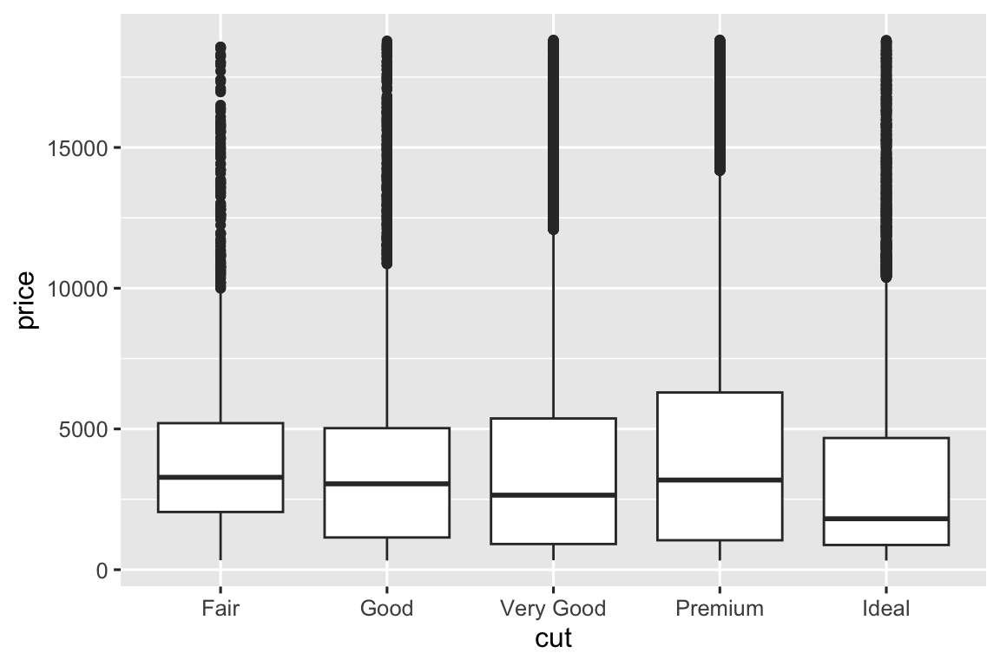
关于分布的信息我们看到的要少得多，但箱线图更加紧凑，因此我们可以更容易地比较它们（并且可以在一个图上展示更多）。这 支持了一个反直觉的发现，即更高质量的钻石通常更便宜！在 练习中，你将面临的挑战是找出为什么。
cut是一个有序因子：fair（一般）比 good（良好）差，good（良好）比 very good（很好）差，依此类推。许 多分类变量并没有这样的内在顺序，因此你可能希望重新排序它们以创建更具信息量的显示。一 种方法是使用fct_reorder()函数，你将在 小节 16.4 中了解该函数的更多信息，但因为我们觉得它非常有用，所以想在这里给你一个快速的预览。例 如，考虑mpg数据集中的class变量。你 可能想知道不同类别之间的公路里程是如何变化的：
ggplot(mpg, aes(x = class, y = hwy)) +
geom_boxplot()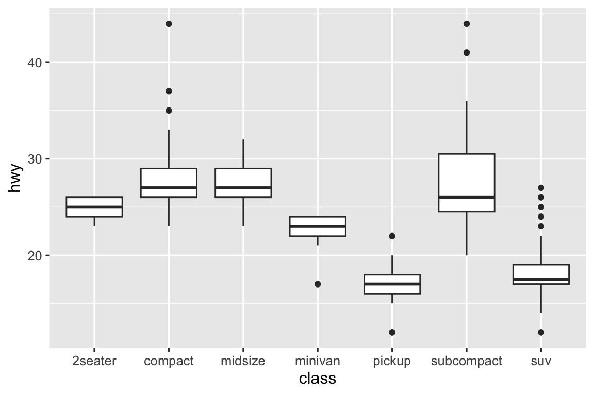
为了使趋势更容易看到，我们根据hwy的中位数对class重新排序:
ggplot(mpg, aes(x = fct_reorder(class, hwy, median), y = hwy)) +
geom_boxplot()
如果你的变量名很长，那么将geom_boxplot()旋转 90° 将会更易于阅读。你 可以通过交换 x 和 y 的美学映射来实现这一点。
ggplot(mpg, aes(x = hwy, y = fct_reorder(class, hwy, median))) +
geom_boxplot()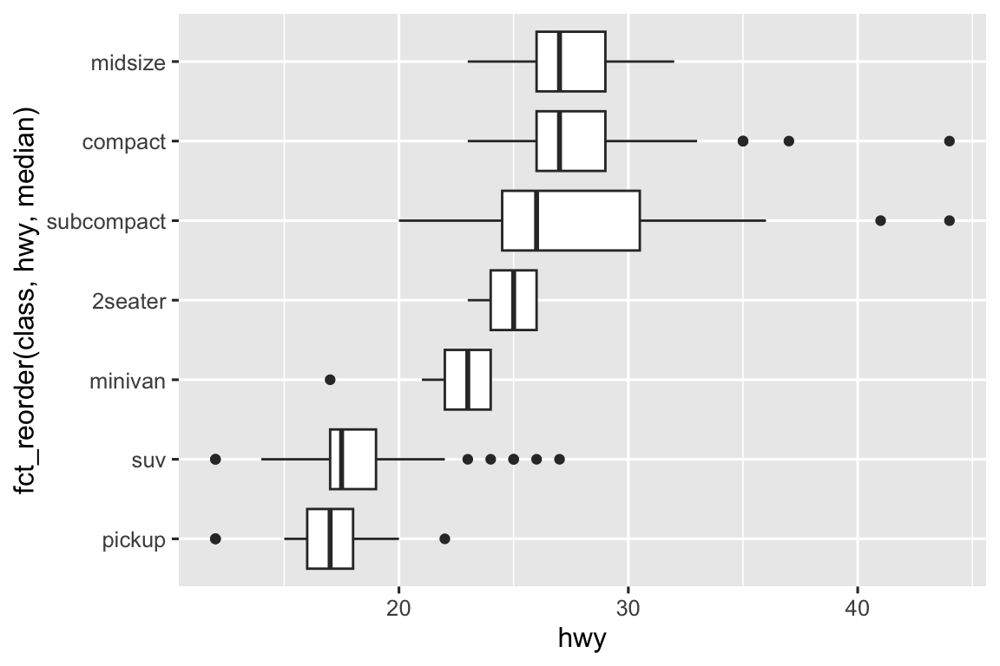
10.5.1.1 练习
利用你学到的知识来改进取消航班与非取消航班起飞时间的可视化。
基于EDA，diamonds数据集中哪个变量看起来对预测钻石的价格最重要？这 个变量与切割方式（
cut）是如何相关的？为 什么这两个关系的组合会导致低质量的钻石更昂贵？不交换 x 和 y 变量，而是在垂直箱线图中添加
coord_flip()作为新层来创建水平箱线图。这 与交换变量有何不同？箱线图的一个问题是它们在数据量较小的时期开发，往往会显示过多的“异常值”。一 种解决这个问题的方法是使用字母值图。安 装
lvplot包，并尝试使用geom_lv()来显示price与cut的分布。你 学到了什么？你 如何解释这些图？使用
geom_violin()创建钻石价格与钻石数据集中一个分类变量的可视化，然后使用分面的geom_histogram()，然后是着色的geom_freqpoly()，最后是着色的geom_density()。比 较和对比这四种图。根 据分类变量的水平可视化数值变量分布的每种方法各有什么优缺点？如果你有一个小型数据集，有时使用
geom_jitter()来避免过度绘图是很有用的，这样可以更容易地看到连续变量和分类变量之间的关系。g gbeeswarm 包提供了多种与geom_jitter()类似的方法。列 出它们并简要描述每种方法的作用。
10.5.2 两个分类变量
为了可视化分类变量之间的协变关系，你需要计算这些分类变量每个水平组合的观察数。一 种方法是依赖内置的geom_count()函数：
ggplot(diamonds, aes(x = cut, y = color)) +
geom_count()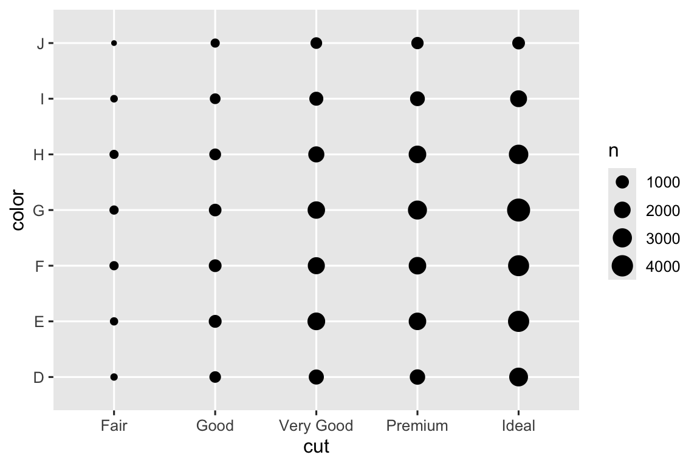
图中的每个圆圈的大小显示了每个值组合出现了多少次观测。协 变将表现为特定x值和特定y值之间的强相关性。
探索这些变量之间关系的另一种方法是使用dplyr来计算计数：
diamonds |>
count(color, cut)
#> # A tibble: 35 × 3
#> color cut n
#> <ord> <ord> <int>
#> 1 D Fair 163
#> 2 D Good 662
#> 3 D Very Good 1513
#> 4 D Premium 1603
#> 5 D Ideal 2834
#> 6 E Fair 224
#> # ℹ 29 more rows然后使用geom_tile()和填充美学进行可视化:
如果分类变量是无序的，你可能想要使用seriation包来同时重新排序行和列，以便更清楚地揭示有趣的模式。对 于较大的图形，你可能想要尝试heatmaply包，它创建交互式图形。
10.5.2.1 练习
如何重新缩放上面的计数数据集，以更清楚地显示color中的cut分布，或cut中的color分布？
如果
color映射到x美学，cut映射到fill美学，使用分段条形图你能得到哪些不同的数据见解？计 算每个分段中的计数。使用
geom_tile()结合dplyr来探索平均航班起飞延误如何因目的地和年份月份而异。这 个图为什么难以阅读？你 如何改进它？
10.5.3 两个数值变量
你已经看到了可视化两个数值变量之间协变关系的一种好方法：使用geom_point()绘制散点图。你 可以在点的模式中看到协变关系。例 如，你可以看到钻石的克拉大小与其价格之间的正相关关系：克拉数越多的钻石价格越高。这 种关系是呈指数型的。
ggplot(smaller, aes(x = carat, y = price)) +
geom_point()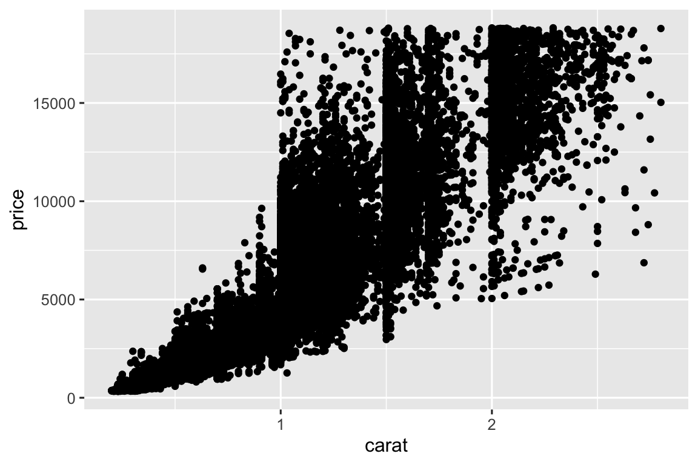
(在本节中，我们将使用smaller数据集来重点关注克拉数小于3的钻石)
随着数据集大小的增加，散点图变得不那么有用，因为点开始重叠并堆积成均匀的黑色区域，这使得难以判断二维空间中数据密度的差异，也难以发现趋势。你 已经看到了一种解决问题的方法：使用alpha美学属性来增加透明度。
ggplot(smaller, aes(x = carat, y = price)) +
geom_point(alpha = 1 / 100)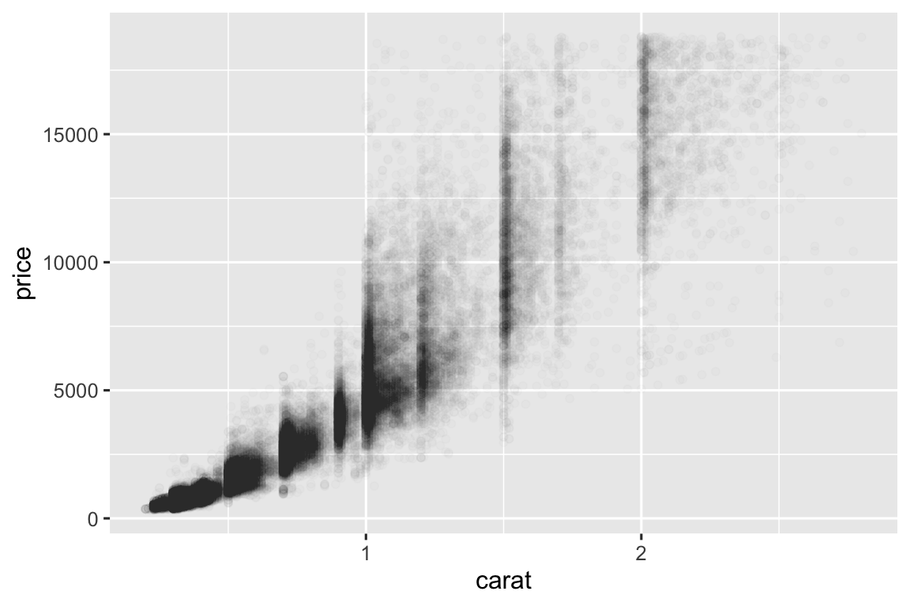
但是，对于非常大的数据集，使用透明度可能会很有挑战性。另 一种解决方案是使用分组（bin）。之 前您使用geom_histogram()和geom_freqpoly()在一维中进行分组。现 在您将学习如何使用geom_bin2d()和geom_hex()在二维中进行分组。
geom_bin2d()和geom_hex()将坐标平面划分为二维的分组（bins），然后使用填充颜色来表示每个分组中有多少点。g eom_bin2d()创建矩形的分组。g eom_hex()创建六边形的分组。要 使用geom_hex()，您需要安装hexbin包。
ggplot(smaller, aes(x = carat, y = price)) +
geom_bin2d()
# install.packages("hexbin")
ggplot(smaller, aes(x = carat, y = price)) +
geom_hex()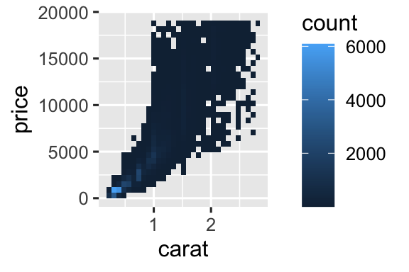
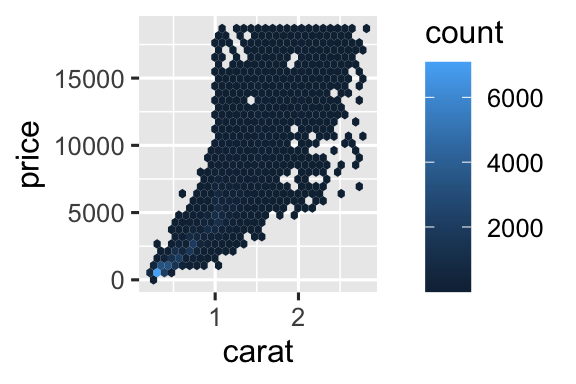
另一种选择是将一个连续变量进行分组，使其表现得像一个分类变量。然 后，您可以使用您学过的用于可视化分类变量和连续变量组合的技术之一。例 如，您可以对carat 进行分组，然后为每个组显示一个箱线图：
ggplot(smaller, aes(x = carat, y = price)) +
geom_boxplot(aes(group = cut_width(carat, 0.1)))![Side-by-side box plots of price by carat. Each box plot represents diamonds that are 0.1 carats apart in weight. The box plots show that as carat increases the median price increases as well. Additionally, diamonds with 1.5 carats or lower have right skewed price distributions, 1.5 to 2 have roughly symmetric price distributions, and diamonds that weigh more have left skewed distributions. Cheaper, smaller diamonds have outliers on the higher end, more expensive, bigger diamonds have outliers on the lower end.](EDA_files/figure-html/unnamed-chunk-27-1.png)
上面使用cut_width(x, width)将 x 分成宽度为 width 的分组。默 认情况下，无论观测的数量如何，箱线图看起来大致相同（除了异常值的数量），因此很难看出每个箱线图汇总了不同数量的点。一 种表示这种差异的方法是让箱线图的宽度与点的数量成比例，这通过设置varwidth = TRUE来实现。
10.5.3.1 练习
除了使用箱线图来总结条件分布外，你还可以使用频数多边形。在 使用
cut_width()和cut_number()时需要考虑什么？这 对可视化carat和price的二维分布有什么影响？可视化根据
price划分的carat分布。非常大的钻石的价格分布与小钻石的价格分布相比如何？是 否符合你的预期，还是让你感到惊讶？
结合你学过的两种技术来可视化
cut、carat和price的联合分布。-
二维图可以揭示一维图中不可见的异常值。例 如，以下图中的某些点具有不寻常的
x和y值组合，即使分别查看这些点的x和y值时看起来是正常的，也使得这些点成为异常值。为 什么在这种情况下散点图是比分组图更好的展示方式？diamonds |> filter(x >= 4) |> ggplot(aes(x = x, y = y)) + geom_point() + coord_cartesian(xlim = c(4, 11), ylim = c(4, 11)) -
使用
cut_number()创建包含大致相等数量点的分组，而不是使用cut_width()创建等宽度的分组。这 种方法的优点和缺点是什么？ggplot(smaller, aes(x = carat, y = price)) + geom_boxplot(aes(group = cut_number(carat, 20)))
10.6 模式与模型
如果两个变量之间存在系统关系，它将在数据中呈现为一种模式。如 果你发现一个模式，问问自己：
- 这个模式是否可能是巧合（即随机机会）？
- 你如何描述这个模式所暗示的关系？
- 这个模式所暗示的关系有多强？
- 还有哪些其他变量可能会影响这种关系？
- 如果你查看数据的各个子组，这种关系会发生变化吗？
数据中的模式提供了关于关系的线索，即它们揭示了协变。如 果你把变化看作是一种产生不确定性的现象，那么协变就是一种减少这种不确定性的现象。如 果两个变量协变，你可以利用一个变量的值来更好地预测第二个变量的值。如 果协变是由因果关系（一个特殊情况）引起的，那么你可以用一个变量的值来控制第二个变量的值。
模型是从数据中提取模式的工具。例 如，考虑钻石数据，很难理解切工和价格之间的关系，因为切工和克拉数，以及克拉数和价格之间存在紧密关系。我 们可以使用模型来消除价格和克拉数之间的非常强的关系，以便我们可以探索剩余的细微差别。以 下代码拟合了一个从carat预测price的模型，然后计算残差（预测值与实际值之间的差异）。一 旦去除了克拉数的影响，残差就给了我们钻石价格的一个视图。请 注意，我们不是直接使用price和carat的原始值，而是首先对它们进行对数转换，并对对数转换后的值拟合模型。然 后，我们对残差进行指数化，以将其重新放入原始价格的尺度上。
library(tidymodels)
diamonds <- diamonds |>
mutate(
log_price = log(price),
log_carat = log(carat)
)
diamonds_fit <- linear_reg() |>
fit(log_price ~ log_carat, data = diamonds)
diamonds_aug <- augment(diamonds_fit, new_data = diamonds) |>
mutate(.resid = exp(.resid))
ggplot(diamonds_aug, aes(x = carat, y = .resid)) +
geom_point()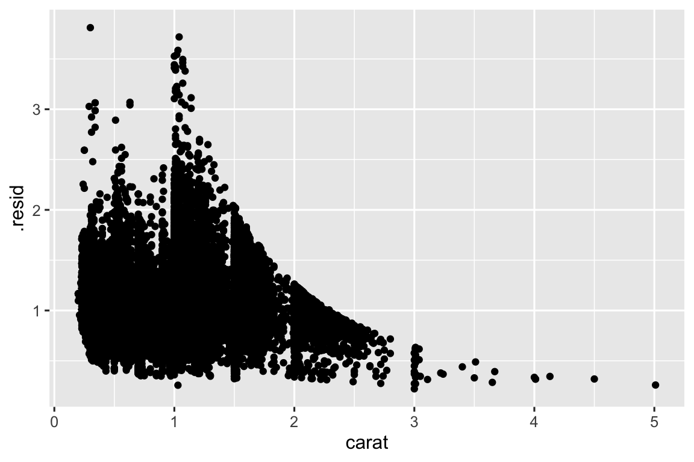
一旦消除了克拉数和价格之间的强关系，你就可以看到切工和价格之间的关系是你所预期的：相对于它们的大小，质量好的钻石更昂贵。
ggplot(diamonds_aug, aes(x = cut, y = .resid)) +
geom_boxplot()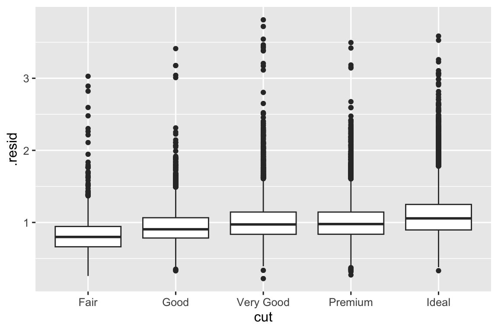
本书并未讨论建模，因为一旦你掌握了数据处理和编程的工具，理解模型是什么以及它们是如何工作的就会变得更加容易。
10.7 小结
在这一章中，你学习了多种工具来帮助你理解数据中的变化。你 已经看到了针对单个变量和变量对的技术。如 果你的数据中有数十个或数百个变量，这些技术可能看起来非常有限，但它们是所有其他技术的基础。
在下一章中，我们将专注于可以用来交流结果的工具。
记住，当我们需要明确指出一个函数（或数据集）来自哪个包时，我们会使用特殊的形式
package::function()或package::dataset。↩︎